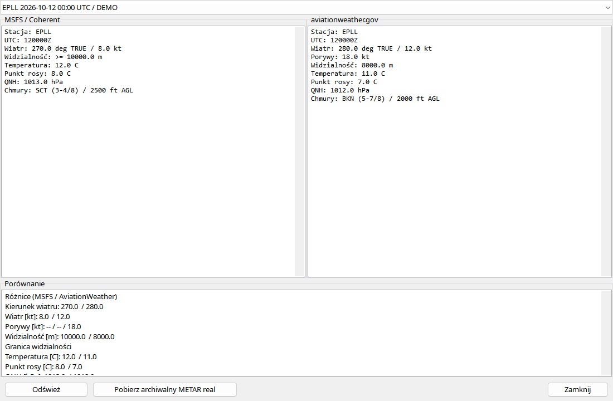

Najpierw wybierz start lub l¹dowanie. Odlotowy snapshot jest zwi¹zany ze zmian¹ ziemia–powietrze, a docelowy z przyziemieniem. Raport symulatora i aviationweather.gov s¹ zapisywane oddzielnie, wraz ze Ÿród³em i czasem. Okno pokazuje surowy raport, dekodowanie oraz ró¿nice. Sprawdzaj stacjê i czas obserwacji przed porównaniem: inne lotnisko albo póŸniejszy raport mog¹ wyjaœniæ rozbie¿noœæ. Brak TAF nie jest prognoz¹ dobrej pogody; stacja mog³a go nie opublikowaæ.
Pogoda dotyczy wybranego startu/l¹dowania. Raporty MSFS i aviationweather.gov s¹ zapisywane osobno ze Ÿród³em i czasem.
| Opcja / czynnoœæ | Dzia³anie i ograniczenia |
|---|---|
| Symulator | Opcjonalny MSFS24-FDR-Bridge korzysta z dostêpnych us³ug awioniki. Dostêpnoœæ zale¿y od MSFS/stacji; bridge nie stworzy TAF niepublikowanego przez stacjê. |
| Moment | Odlot przy zmianie ziemia–powietrze, przylot przy przyziemieniu, wed³ug dostêpnego planu/lotniska. To snapshoty zdarzeñ, nie ci¹g³e obserwacje urzêdowe. |
| Realne raporty | SprawdŸ czas obserwacji i pobrania. PóŸniejsze pobranie nie musi odzyskaæ dok³adnej pogody dawnego lotu. |
| Dekodowanie | Stacja/czas, wiatr/porywy, widzialnoœæ, zjawiska, chmury, temperatura/punkt rosy, ciœnienie, gdy raportowane. Brakuj¹ce grupy zostaj¹ puste. |
| Ró¿nice | Przyczyn¹ mo¿e byæ inna stacja/czas lub ustawienia symulatora. Ciœnienie przy samolocie na wysokoœci nie jest QNH lotniska. |
| Offline | Zapisane raporty zostaj¹ z lotem. Nowe pobranie wymaga sieci i dostêpnych akcji. |
